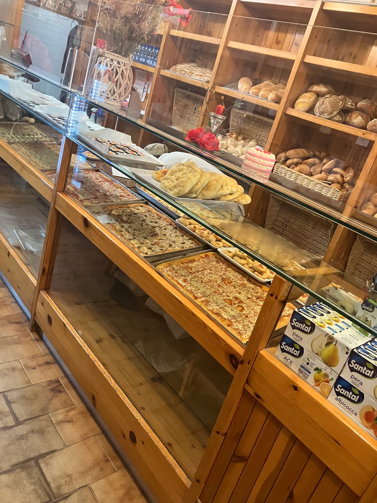
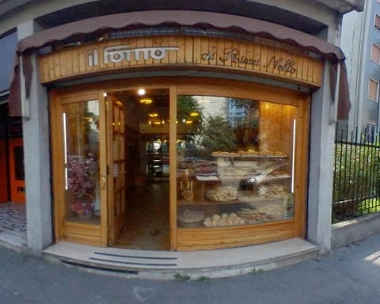

Panificio Rizzi Nello · Viale Suzzani 12, Niguarda · dal 1979
Il pane è vita.
Lo dice Nello Rizzi, che ha cominciato a fare il pane a undici anni. Dal 1979 il suo forno è qui, in viale Suzzani: più di venti tipi di pane, focaccia e pizza al trancio, i dolci di stagione, tutto dal forno dietro al banco. E il banco è di legno, come tutto il resto.
7½Aperto dalle 7:30 alle 19:30 senza pausa, dal lunedì al sabato
Orari in negozio

arte bianca · uno
Più di venti tipi.
Sono i pani che Nello Rizzi ha messo a punto in settant'anni di forno. Al banco li trovate a rotazione, e per ognuno c'è chi vi dice a cosa sta bene: è un forno dove il pane si chiede, e si consiglia.
- Pane comunemichette e pagnotte di ogni giorno
- Integralecon la crusca, per chi lo vuole scuro
- Al latte e all'olioi pani morbidi
- Di grano durola mollica gialla e compatta
- Pan carréNello lo faceva già negli anni Cinquanta
- Grissinitirati e cotti qui
Il pane della settimana
Lo scrivono i clienti nelle recensioni: il martedì le pagnotte con semi e farine diverse, il giovedì il pane al farro.
Gli scaffali, coi cestini del pane Dentro è tutto di legno: il banco, gli scaffali, la panca
arte bianca · due
Dal forno dietro al banco.
Pizza al trancio, pizzette, focaccia e schiacciate escono dal forno adiacente al negozio e finiscono sul banco, a teglie. Si portano via, per il pranzo o per la merenda.
- Pizza al trancioin teglia, tagliata al momento
- Pizzettequelle tonde, da mangiare per strada
- Focacciaalta e morbida, a pezzi
- Schiacciatesottili e croccanti
La vetrina, con le teglie
arte bianca · tre
Le crostatine, e il calendario.
Tutto l'anno: crostatine, brioche e croissant, pasticceria secca, strudel, torte. Poi c'è l'anno del forno, che segue le feste come si è sempre fatto.
- Carnevalele chiacchiere, e i crostoli: così si chiamano in Veneto, da dove Nello è arrivato
- Pasquala colomba
- Nataleil panettone e la veneziana
Le crostatine Le chiacchiere, a Carnevale
arte bianca · quattro
Sabrina e Chiara.
Sono i nomi che i clienti scrivono nelle recensioni, insieme a «la ragazza bionda» e «la signora». Il forno è a conduzione familiare, e si sente: l'assaggio offerto, il consiglio sul pane da prendere, il sorriso.
Delle 76 recensioni Google con un testo, 39 parlano di gentilezza, 29 del pane, 23 dei dolci, 12 di un forno «come una volta».
4,5128 recensioni su Google
«una bottega di quartiere come quelle di una volta»
Da una recensione Google
arte bianca · cinque
Undici anni, cinquecento lire.
Nello Rizzi ha cominciato a undici anni, garzone in un forno del veronese; nel 1946 la paga era cinquecento lire la settimana, più vitto e alloggio. Il mestiere lui lo chiama arte bianca, e lo ha raccontato così.
- 1946Garzone a undici anni, cinquecento lire la settimana.
- 13 anniArriva a Milano, per imparare.
- Anni CinquantaDieci anni da Dai Grossi: il pane di segale e il pan carré, per la prima volta in città.
- 1963Il laboratorio di via Pianell, con i fratelli Carlo e Bruno.
- 1979Il forno di viale Suzzani 12: questo.
- 2004La Camera di Commercio di Milano lo premia per cinquantotto anni di panificazione.
- OggiLa famiglia al banco, e i pani che Nello ha portato dal Veneto: il pan biscotto, il pan puf, il pan meino.
Il forno di viale Suzzani, verso la porta
dove e quando
Viale Suzzani 12, senza pausa.
A Niguarda, vicino a viale Fulvio Testi. Aperto dalle 7:30 alle 19:30, orario continuato, dal lunedì al sabato: il pane c'è anche alle tre del pomeriggio. Domenica chiuso.
- Asporto: pane, pizza e dolci si portano via.
- Il bus 42 ferma vicino; parcheggio sulle strisce blu (lo scrivono i clienti).
- Per un ordine particolare, una telefonata prima.
| lunedì | 07:30–19:30 |
| martedì | 07:30–19:30 |
| mercoledì | 07:30–19:30 |
| giovedì | 07:30–19:30 |
| venerdì | 07:30–19:30 |
| sabato | 07:30–19:30 |
| domenica | chiuso |

Le domande che ci fanno.
Quali sono gli orari?
Dal lunedì al sabato dalle 7:30 alle 19:30, orario continuato. Domenica chiuso.
Fate la pausa pranzo?
No: il forno resta aperto dalle 7:30 alle 19:30 senza interruzione, dal lunedì al sabato. Il pane c'è anche alle tre del pomeriggio.
Quanti tipi di pane avete?
Più di venti, a rotazione: pane comune, integrale, al latte, all'olio, di grano duro, michette e pagnotte, pan carré, grissini. Al banco vi diciamo quale prendere.
Fate pizza e focaccia?
Sì: pizza al trancio, pizzette, focaccia e schiacciate, dal forno dietro al banco. Si portano via.
Fate le chiacchiere, la colomba, il panettone?
Sì, seguendo il calendario: a Carnevale chiacchiere e crostoli, a Pasqua la colomba, a Natale panettone e veneziana.
Posso ordinare per telefono?
Per un ordine particolare, una telefonata prima: 02 642 7471.